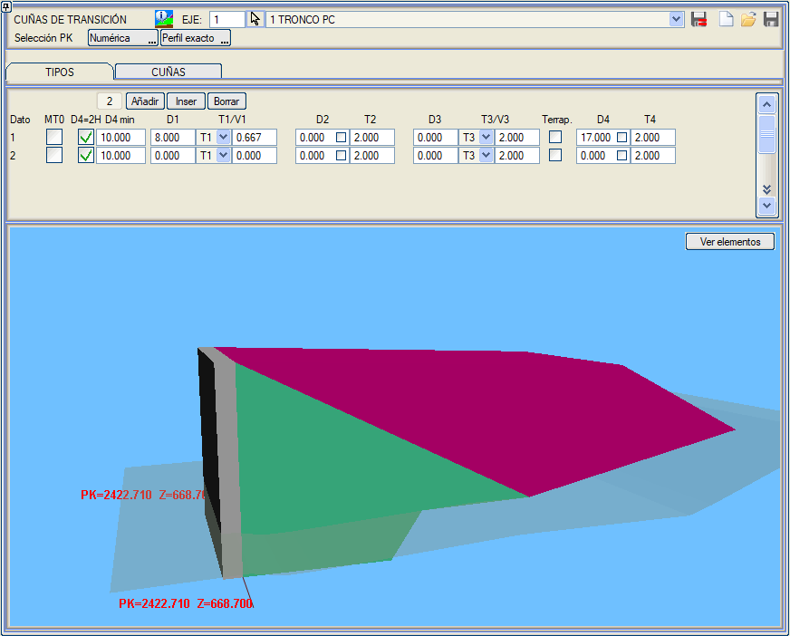
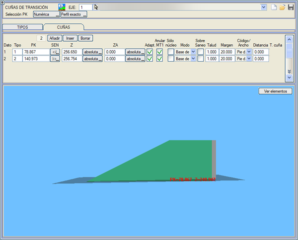
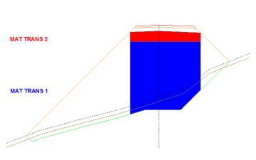
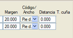
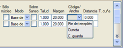
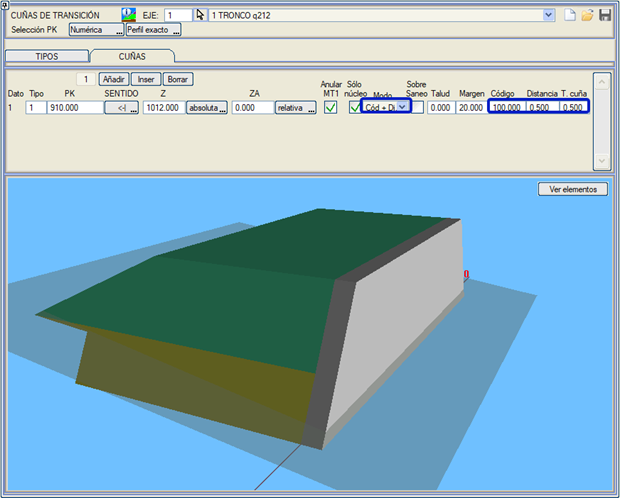

| |
|
GEÇİŞ DOLGULARI
|
Bu menü, sanat yapılarının kenarayakları arkasındaki dolgu için iki farklı dolgu geçiş malzemesi (MAT_TRANS_1 ve MAT_TRANS_2 olarak metrajlandırılır) oluşturmayı sağlar. Bu menüdeki Kilometre (KM) verileri hem grafik hem de sayısal olarak girilebilir ([Tıklama]/[Klavye] düğmeleri). Grafik olarak verilmesi durumunda, noktanın eksen üzerindeki izdüşümü tam bir enkesite veya enterpole edilmiş bir enkesite karşılık gelebilir. KIRMIZI KOTLAR menüsünde, eğer sanat yapıları çizimi etkinse, geçiş malzemelerini tanımlayan çizgiler (MT1 ve MT2) boyuna olarak gösterilir. Düşey güzergah hesaplandığında, bu malzemelerin göründüğü veya geometrisinin değiştiği tüm özel kilometrelerde otomatik olarak enkesitler enterpole edilir. Geçiş malzemesi 2'yi (MT2, MAT_TRANS_2 olarak metrajlandırılır) ortadan kaldırmak için, D3, D4, T3 ve T4 değerlerini sıfır bırakmak yeterlidir. MT0 seçeneği, MT1 malzemesini iki malzemeye ayırmayı sağlar: MT0 ve MT1. D4=2H kutucuğu, D4 uzunluğunu H yüksekliğinin iki katına eşit yapar. Bir D4 min değeri atanarak, D4=2H sonucunun bu değerden küçük olması durumunda minimum bir değer zorlanabilir. MT0 katmanının arazinin üzerinde belirli bir kota kadar ulaşması ve onun üzerinde MT1 veya MT2'nin yer alması sağlanabilir. Bunun için dolguda arazinin üzerinde bir Z kotu tanımlanır ve bu durumda dolgu tipinde:
Bir yapıdan sonraki bir dolgunun T4 şevi, bir sonraki dolgunun (başka bir yapıdan önce gelen) şeviyle kesiştiğinde, kesişim noktası belirlenir ve bu kilometreden itibaren bir sonraki dolgu ile devam edilir. Bu kesişim noktasında da bir enkesit enterpole edilir. 
Son olarak, DOLGULAR sekmesinden, önceki geometrilerin her biri için kilometre aralıkları tanımlanır. Her bir geçiş dolgusu, kenarayaktaki kilometre, ilerleme yönü ve kenarayak temeli için kazı taban kotu ile tanımlanır. Bu kot, mutlak bir değer olarak veya arazi yüzeyine göreceli bir değer olarak (yüzeyin altındaki bir kot negatif olmalıdır) verilebilir. Ayrıca geçiş malzemeleri için bir üst kot da tanımlamak mümkündür. Bu kot, mutlak olarak veya kırmızı kota göreceli olarak tanımlanabilir. Bu malzemelerin üzeri dolgu ile kaplanır. Her bir geçiş dolgusu için enine kazı şevi ve geçiş malzemesi MT2'nin tavanının eksende araziyi kestiği (T4 şevi) noktadan sonraki bir bölgeyi analiz etmeyi sağlayan bir kilometre marjı tanımlanabilir. D2 ve D4 (dolgular sekmesi) tanım kutucuklarında, etkinleştirilmesi durumunda bu mesafelerin, mevcut olması koşuluyla, seçme malzemede ölçülmesi için bir bayrak eklenmiştir. Diyalog kutusunda, Mevcut Dolgunun (Dolgular Sekmesi) geometrisini görselleştirmeyi sağlayan bir 3B görüntüleyici gösterilir. Eğer TİPLER sekmesinde veri değiştiriyorsak, mevcut dolgu olarak, görselleştirmek istediğimiz tip verisini kullanan bir dolguya sahip olmalıyız. Görüntüleyici, eksenin ve arazinin gerçek kilometrelerini ve kotlarını (boyuna yönde) kullanır. 
Eğer MT1'i İptal Et kutucuğu etkinleştirilirse, MT1 malzemesi göz ardı edilir ve dolayısıyla MT1'in tüm kısmı MT2 malzemesi ile doldurulur. Dolguları Sadece Çekirdek modunda oluşturabiliriz. Bu durumda geçiş malzemeleri, dolgunun platform kenarı (tesviye yüzeyi veya seçme malzemenin drenaj noktası) ile yanal olarak sınırlandırılmış iç kısmına uygulanır. Bu noktanın düşeyinden dışarıya doğru olan kısım dolgu malzemesi ile doldurulur. |
"Sadece Çekirdek" bayrağı devre dışı bırakıldığında, dolgu kazısını değiştirmek için ayarlanabilecek parametreler şunlar olabilir:
 Geçiş dolgusu malzemelerinin Sanat Yapıları dolgusu üzerine oturtulmasına izin verilir.Geçiş dolgusu, Dolgu Zemin İyileştirmesi üzerine oturtulabilir. Drenaj tabakalı bir iyileştirme tanımlanmış olmalıdır. O zaman dolguyu oluşturan malzemeler drenaj tabakasının üzerinde görünür. "Sadece çekirdek" bayrağı devre dışı bırakıldığında, dolgu kazısını enine yönde iki mod aracılığıyla tanımlamaya izin verilir:
 Sadece çekirdek durumunda, iki modumuz vardır:

|